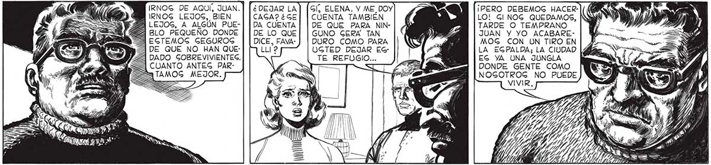
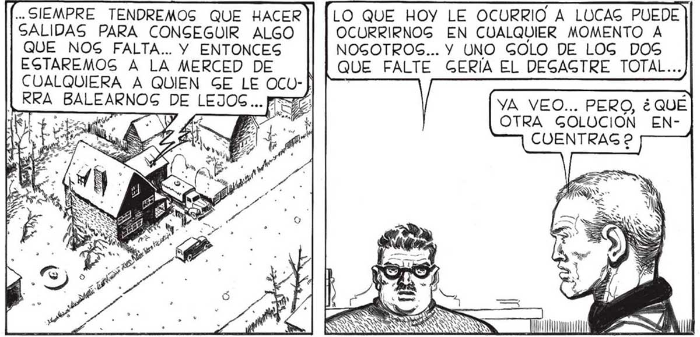

¡ Y CLARO! ¿ QUIÉN SE CREE UC: ... QUE UNA MAG, AUNQUE FUERA TED QUE ERA EL EXPERTO AR- LA SALIDA DE LA DE UN AMIGO COMO LUCAS, NO ESTO QUE ARREGLABA LAS PABLO. EL HACIA GRAN DIFERENCIA. GCOPETAG EN LA FERRETE- 7 o. o CHICO QUE LO PRINCIPAL ES DE ACUERDO. DEL SOTANO CABEZA, NO DE- LO MAS URDE LA FERRE- | JARNOSG DOMINAR GENTE POR TERÍA, AMINO- | POR EL MIEDO. RO ALGO LA IMPREGION CAUSADA POR MI SOMBRIO RELATO. EN VERDAD ERA TANTA LA MUERTE QUE NOS RODEABA... NO, JUAN, NO EGTOY DE ACUERDO. HEMOG EGTADO COMETIENDO UN ERROR, Y NO DEBEMOG INGIGTIR EN ÉL. EL ERROR DE CREER QUE PODIAMOS HACER DE LA CAGA UNA EGPECIE DE ISLA. COMO Gl LA CAGA FUERA DEFENGA GUFICIENTE. NO, JUAN, NO NOS ILUGIONEMOSG: pa AUNQUE CONVIRTA MOG LA CASA EN UNA FORTALEZA... : = Y Ne, A y 4 Y, 4 Y ¿ DEJAR LA CAGA? ¿GE DA CUENTA DE LO QUE DICE, FAVAIRNOG DE AQUÍ, JUAN. | IRNOG LEJOS, BIEN LEJOS, A ALGÚN PUEGl, ELENA. Y ME_DOY CUENTA TAMBIÉN DE QUE PARA NINGUNO GERA TAN DURO COMO PARA A DE QUE NO HAN QUE: UGTED DEJAR EC: 3 DADO SOBREVIVIENTES. 4 CUANTO ANTES PAR3 TAMOG MEJOR. INES .. SIEMPRE TENDREMOS QUE HACER SALIDAS PARA CONSEGUIR ALGO QUE NOS FALTA... Y ENTONCES EGTAREMOG A LA MERCED DE CUALQUIERA A QUIEN GE LE OCU-| RRA BALEARNOG DE LEJOS... pr==7 [...ANTEGS DE GEGUIR ACUMOULANDO COGAS, EG TAPIAR PUERTAS Y VENTANAG: TENEMOG QUE CONVERTIR LA CAGA EN UNA FORTALEZA, SIN OTRAS ABERMANTENER A RAYA A LOG HOMBRES. TODAG LAG PROXIMAS GALIDAG LAG DEDICAREMOS A SA BUGCAR ARMAS: ¡ TENEMOG QUE Í, ¿a ys Pa yl?" E AHORA SE TRATA DE Y ¡Q TURAG QUE LAS | [[EQUIPARNOS COMO PARA UN Pl Mare), INDIGPENGA - ASEDIO ! 7 0%] BLES. TÓ MIG"AN MO DIJIGTE QUE YA NO GE TRATA GOLO... Ae LO QUE HOY LE OCURRIO A LUCAS PUEDE OCURRIRNOG EN CUALQUIER MOMENTO A NOGOTROS... Y UNO GOLO DE LOG DOS QUE FALTE GERÍA EL DEGAGTRE TOTAL... A YA VEO... PERO, ¿QUÉ "AS A: OTRA GOLUCION ENWM AR CUENTRAG 2 ¡PERO DEBEMOG HACERLO! GI NOG QUEDAMOS, | TARDE O TEMPRANO JUAN Y YO ACABAREMOG CON UN TIRO EN LA EGPALDA; LA CIUDAD EG YA UNA JUNGLA DONDE GENTE COMO NOGOTROG NO PUEDE ..DE MANTENER A RAYA LA NE-] 61

